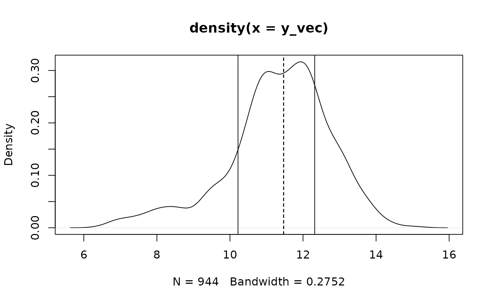
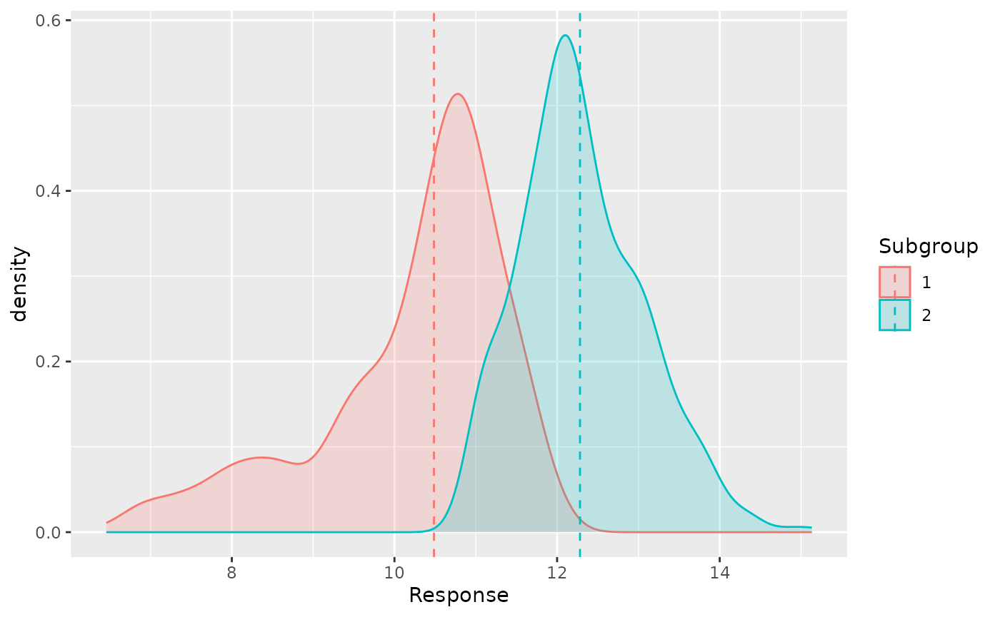

Analyze student performance
Source:vignettes/Analyize_student_performance.Rmd
Analyize_student_performance.RmdIn this article, we use the student performance dataset to
demonstrate how to perform subgroup analysis and variable selection
simultaneously via the package RSAVS.
NOTE: This article is finished with
RSAVS version 0.1.2.
library(ggplot2)
library(dplyr)
#>
#> Attaching package: 'dplyr'
#> The following objects are masked from 'package:stats':
#>
#> filter, lag
#> The following objects are masked from 'package:base':
#>
#> intersect, setdiff, setequal, union
library(skimr)
remotes::install_github("fenguoerbian/RSAVS", ref = "v0.1.2")
#> Using github PAT from envvar GITHUB_PAT. Use `gitcreds::gitcreds_set()` and unset GITHUB_PAT in .Renviron (or elsewhere) if you want to use the more secure git credential store instead.
#> Downloading GitHub repo fenguoerbian/RSAVS@v0.1.2
#> quantreg (5.98 -> 5.99) [CRAN]
#> Installing 1 packages: quantreg
#> Installing package into '/home/runner/work/_temp/Library'
#> (as 'lib' is unspecified)
#> Running `R CMD build`...
#> * checking for file ‘/tmp/RtmpRaCJx1/remotes1ebf34894df7/fenguoerbian-RSAVS-fe2e615/DESCRIPTION’ ... OK
#> * preparing ‘RSAVS’:
#> * checking DESCRIPTION meta-information ... OK
#> * cleaning src
#> * checking for LF line-endings in source and make files and shell scripts
#> * checking for empty or unneeded directories
#> * building ‘RSAVS_0.1.2.tar.gz’
#> Installing package into '/home/runner/work/_temp/Library'
#> (as 'lib' is unspecified)
library(RSAVS)Introduction to the dataset
This student performance dataset is about the grading point of
evaluations of 1044 Portuguese students from two core classes(Math and
Portuguese). There are 395 observations in the math data frame
mat_df and 649 observations in the Portuguese data frame
por_df. And the full dataset full_df is just
the combination of these two data frames resulting 1044 observations.
You can find details about these datasets via ?full_df.
In later analysis, we will use the full dataset full_df.
The basic information of this dataset is shown below:
skimr::skim(full_df)| Name | full_df |
| Number of rows | 1044 |
| Number of columns | 33 |
| _______________________ | |
| Column type frequency: | |
| character | 17 |
| numeric | 16 |
| ________________________ | |
| Group variables | None |
Variable type: character
| skim_variable | n_missing | complete_rate | min | max | empty | n_unique | whitespace |
|---|---|---|---|---|---|---|---|
| school | 0 | 1 | 2 | 2 | 0 | 2 | 0 |
| sex | 0 | 1 | 1 | 1 | 0 | 2 | 0 |
| address | 0 | 1 | 1 | 1 | 0 | 2 | 0 |
| famsize | 0 | 1 | 3 | 3 | 0 | 2 | 0 |
| Pstatus | 0 | 1 | 1 | 1 | 0 | 2 | 0 |
| Mjob | 0 | 1 | 5 | 8 | 0 | 5 | 0 |
| Fjob | 0 | 1 | 5 | 8 | 0 | 5 | 0 |
| reason | 0 | 1 | 4 | 10 | 0 | 4 | 0 |
| guardian | 0 | 1 | 5 | 6 | 0 | 3 | 0 |
| schoolsup | 0 | 1 | 2 | 3 | 0 | 2 | 0 |
| famsup | 0 | 1 | 2 | 3 | 0 | 2 | 0 |
| paid | 0 | 1 | 2 | 3 | 0 | 2 | 0 |
| activities | 0 | 1 | 2 | 3 | 0 | 2 | 0 |
| nursery | 0 | 1 | 2 | 3 | 0 | 2 | 0 |
| higher | 0 | 1 | 2 | 3 | 0 | 2 | 0 |
| internet | 0 | 1 | 2 | 3 | 0 | 2 | 0 |
| romantic | 0 | 1 | 2 | 3 | 0 | 2 | 0 |
Variable type: numeric
| skim_variable | n_missing | complete_rate | mean | sd | p0 | p25 | p50 | p75 | p100 | hist |
|---|---|---|---|---|---|---|---|---|---|---|
| age | 0 | 1 | 16.73 | 1.24 | 15 | 16 | 17 | 18 | 22 | ▇▅▅▁▁ |
| Medu | 0 | 1 | 2.60 | 1.12 | 0 | 2 | 3 | 4 | 4 | ▁▅▇▆▇ |
| Fedu | 0 | 1 | 2.39 | 1.10 | 0 | 1 | 2 | 3 | 4 | ▁▆▇▆▆ |
| traveltime | 0 | 1 | 1.52 | 0.73 | 1 | 1 | 1 | 2 | 4 | ▇▅▁▁▁ |
| studytime | 0 | 1 | 1.97 | 0.83 | 1 | 1 | 2 | 2 | 4 | ▅▇▁▂▁ |
| failures | 0 | 1 | 0.26 | 0.66 | 0 | 0 | 0 | 0 | 3 | ▇▁▁▁▁ |
| famrel | 0 | 1 | 3.94 | 0.93 | 1 | 4 | 4 | 5 | 5 | ▁▁▂▇▅ |
| freetime | 0 | 1 | 3.20 | 1.03 | 1 | 3 | 3 | 4 | 5 | ▁▃▇▆▂ |
| goout | 0 | 1 | 3.16 | 1.15 | 1 | 2 | 3 | 4 | 5 | ▂▆▇▆▃ |
| Dalc | 0 | 1 | 1.49 | 0.91 | 1 | 1 | 1 | 2 | 5 | ▇▂▁▁▁ |
| Walc | 0 | 1 | 2.28 | 1.29 | 1 | 1 | 2 | 3 | 5 | ▇▅▅▃▂ |
| health | 0 | 1 | 3.54 | 1.42 | 1 | 3 | 4 | 5 | 5 | ▃▂▅▃▇ |
| absences | 0 | 1 | 4.43 | 6.21 | 0 | 0 | 2 | 6 | 75 | ▇▁▁▁▁ |
| G1 | 0 | 1 | 11.21 | 2.98 | 0 | 9 | 11 | 13 | 19 | ▁▂▇▇▂ |
| G2 | 0 | 1 | 11.25 | 3.29 | 0 | 9 | 11 | 13 | 19 | ▁▂▇▇▂ |
| G3 | 0 | 1 | 11.34 | 3.86 | 0 | 10 | 11 | 14 | 20 | ▁▂▇▆▁ |
Our interest is G3, the final grade. And we want to
understand how it’s related to those covariates. Note that although
there seems to be several numeric variables in this datasets, most of
them are actually binary or nominal coded.
First of all, we project the data on to the space spaned by most of the binary and nominal variables in the dataset. This gives us some basic understanding about how the average final grade is distributed among different observed subgroups.
fit1 <- lm(G3 ~ school + address + Pstatus + famsize + schoolsup + famsup + activities + paid + internet + nursery + higher + romantic + Mjob + Fjob + guardian + reason, data = full_df)
plot(density(fit1$fitted.values))
Looks like most of the grades are centered between 10-14 with some heavy tail at the lower end.
Next, we try expolore the relationship between individuals and the average grading point of the observed subgroup via OLS.
fit2 <- lm(fit1$fitted.values ~ sex + age + Medu + Fedu + traveltime + studytime + failures + famrel + freetime + goout + Dalc + Walc + health + absences,
data = full_df)
plot(density(fit2$fitted.values))
The fitted value doesn’t tell much, but the residual plot tells something
ggplot(fit2, aes(fit2$residuals)) + geom_density() + xlab(NULL)It’s skewed and potentially multimodal, which indicates a robust
regression, along with a latent subgroup structure, would be
appropriate.Thus, we analyze the dataset by the proposed method of this
package with the L1 loss and the SCAD penalty
in this study.
Robust subgroup analysis and variable selection
Before the analysis, we randomly sample 100 observations and denote this dataset as , and use the remaining 944 observations as the training dataset .
# prepare the full dataset
y_vec_full <- fit1$fitted.values
x_mat_full <- stats::model.matrix(fit2)[, -1] # do not include the intercept term!
# sample 100 observations as test set
test_num <- 100
set.seed(1024)
test_idx <- sample(1 : nrow(full_df), size = test_num, replace = F)
# get the training set
x_mat <- x_mat_full[-test_idx, , drop = FALSE]
y_vec <- y_vec_full[-test_idx]
n <- nrow(x_mat)
p <- ncol(x_mat)
# get the test set
y_vec_test <- y_vec_full[test_idx]
x_mat_test <- x_mat_full[test_idx, , drop = FALSE]Analysis on the training set
Set some basic variables for the proposed algorithm
lam1_len <- 40 # length of lam1_vec
lam2_len <- 30 # length of lam2_vec
phi <- 5 # constant needed for mBICThen we can apply our method at the training set. By default, it will
use L1 loss function coupled with the SCAD
penalty. You can use ?RSAVS_LargeN to find out more about
this function.
# It will take some time!
res <- RSAVS_LargeN(y_vec = y_vec, x_mat = x_mat,
lam1_length = lam1_len, lam2_length = lam2_len,
phi = phi, tol = 0.001, max_iter = 100)
#> Basic variables initialized.
#> Beta finished.
#> Mu finished.
#> Z finished.
#> S finished.
#> W finished.
#> q1 finished.
#> q2 finished.
#> q3 finished.
#> D started.
#> D finished.
#> beta left finished.
#> mu left finished.
#> [1] "pamk fail!"The proposed algorithm can do subgroup analysis and variable
selection simultaneously via regularization method. It will search over
the grid space spanned by lam1 and lam2. And
choose a best one according to a modified BIC criteria.
We can check the covariate effect with
best_ind <- res$best_ind
mu_new <- res$mu_improve_mat[res$best_ind, ]
beta_new <- res$w_mat[res$best_ind, ]
names(beta_new) <- colnames(x_mat)
beta_new
#> sexM age Medu Fedu traveltime studytime
#> 0.00000000 -0.03657224 0.22212294 0.00000000 0.00000000 0.00000000
#> failures famrel freetime goout Dalc Walc
#> 0.00000000 0.00000000 0.00000000 0.00000000 0.00000000 0.00000000
#> health absences
#> 0.00000000 0.00000000and the estimated subgroup information with
table(mu_new)
#> mu_new
#> 11.4653382346014 11.4729496143311
#> 442 502Also we can visualize the density plot of G3 for these
identified subgroups
plot(density(y_vec))
for(i in 1 : length(unique(mu_new))){
id <- which(mu_new == unique(mu_new)[i])
abline(v = mean(y_vec[id]))
abline(v = unique(mu_new)[id], lty = 2)
}
As we can see, the algorithm gives us a reasonable partition of the
observations, but the estimation of subgroup effects mu_new
is quite indistinguishable due to the presence of the penalty
functions.
We can further improve these estimations with an ordinary robust
regression without any penalty functions given the estimated parameter
structure from the previous results. And we can perform this
post-selection estimation over the whole solution plane. (Since there
are lam1 and lam2, the regular solution path
becomes a solution plane.)
mu_further_improve_mat <- matrix(0, nrow = lam1_len * lam2_len, ncol = n)
beta_further_improve_mat <- matrix(0, nrow = lam1_len * lam2_len, ncol = p)
bic_vec <- rep(0, lam1_len * lam2_len)
max_bic <- max(res$bic_mat)
for(i in 1 : (lam1_len * lam2_len)){
tmp <- RSAVS_Further_Improve(y_vec = y_vec, x_mat = x_mat, mu_vec = res$mu_improve_mat[i, ], beta_vec = res$w_mat[i, ])
mu_new <- as.vector(tmp$mu_vec)
beta_new <- tmp$beta_vec
mu_further_improve_mat[i, ] <- mu_new
beta_further_improve_mat[i, ] <- beta_new
bic_vec[i] <- RSAVS:::RSAVS_Compute_BIC(y_vec, x_mat, beta_new, mu_new, loss_type = "1", phi = phi)
# update bic according to complexsity upper bound
current_group_num <- length(unique(mu_new))
current_active_num <- sum(beta_new != 0)
if((current_active_num + current_group_num) >= 11){
bic_vec[i] <- max_bic
}
}
best_id <- which.min(bic_vec)
if(best_id == 1){
best_id <- which.min(bic_vec[-1]) + 1
}
mu_new <- mu_further_improve_mat[best_id, ]
beta_new <- beta_further_improve_mat[best_id, ]
names(beta_new) <- colnames(x_mat)After this further improving procedure, the estimated covariate effects are
beta_new
#> sexM age Medu Fedu traveltime studytime failures
#> 0.0000000 -0.1164212 0.3768496 0.0000000 0.0000000 0.0000000 0.0000000
#> famrel freetime goout Dalc Walc health absences
#> 0.0000000 0.0000000 0.0000000 0.0000000 0.0000000 0.0000000 0.0000000and the identified subgroups are
table(mu_new)
#> mu_new
#> 11.5671844210441 13.1302268201393
#> 439 505We can visualize the estimated subgroups. First we just need to
prepare a data.frame for ggplot.
Mu_to_ID <- function(mu_vec, mu_unique){
# This function converts the original mu vector to a resulting vector, with the same length.
# But the entries is replaced with the index of this entry in unique(mu_vec), or the provided variable mu_unique
if(missing(mu_unique)){
mu_unique <- unique(mu_vec)
}
mu_vec <- sapply(mu_vec, FUN = function(x, unique_vec){
return(which(unique_vec == x))
}, unique_vec = mu_unique)
return(mu_vec)
}
rsavs_res <- data.frame(target = y_vec,
fitted = mu_new + x_mat %*% beta_new,
residual = y_vec - mu_new - x_mat %*% beta_new,
mu_new = mu_new,
mu_id = as.factor(Mu_to_ID(mu_new, unique(mu_new))),
course = c(rep("por", nrow(por_df)), rep("mat", nrow(mat_df)))[-test_idx])Now we can show the density plot of the G3 given the
estimated latent subgroups with the dashed line being the median of each
group.
rsavs_res %>% group_by(mu_id) %>%
mutate(subgroup_median = median(fitted)) %>%
ggplot(aes(target, fill = mu_id, color = mu_id, group = mu_id)) +
geom_density(alpha = 0.2) +
geom_vline(aes(xintercept = subgroup_median, color = mu_id), linetype = "dashed") +
xlab("Response") + labs(color = "Subgroup", fill = "Subgroup")
Some inference on the test set
Based on the results from training set, we can propose a model as
where
refers to the G3 of the i-th subject and
if the i-th subject belongs to the subgroup 1 and otherwise
.
is the difference between these 2 subgroups.
We use regular K-medoids method to partition the dataset into two clusters with respect to the adjusted response with the covariate effects removed with the coefficients given by our method based on Dataset
# residual_test is the adjusted response with the covariate effects removed
residual_test <- y_vec_test - x_mat_test %*% beta_new
# cluster residual_test into 2 groups with regular kmeans
tmp_kmeans <- stats::kmeans(residual_test, centers = 2)
group_indicator <- tmp_kmeans$cluster - 1
# form the simplified covariate matrix with only active covariates
x_mat_test_active <- x_mat_test[, which(beta_new != 0), drop = FALSE]We can make inference about these parameters in the models with the simplified robust regression
rqfit <- quantreg::rq(y_vec_test ~ group_indicator + x_mat_test_active)
#> Warning in rq.fit.br(x, y, tau = tau, ...): Solution may be nonunique
summary(rqfit, alpha = 0.05)
#> Warning in rq.fit.br(x, y, tau = tau, ci = TRUE, ...): Solution may be
#> nonunique
#>
#> Call: quantreg::rq(formula = y_vec_test ~ group_indicator + x_mat_test_active)
#>
#> tau: [1] 0.5
#>
#> Coefficients:
#> coefficients lower bd upper bd
#> (Intercept) 14.52525 11.00448 17.76657
#> group_indicator -1.32816 -2.13047 -1.11966
#> x_mat_test_activeage -0.20520 -0.39711 -0.02019
#> x_mat_test_activeMedu 0.35623 0.22410 0.62545At 95% confidence level, the results implies that younger students
may outperform older ones, and higher G3 scores can alos be
expected for those children whose mothers have been given higher level
education.